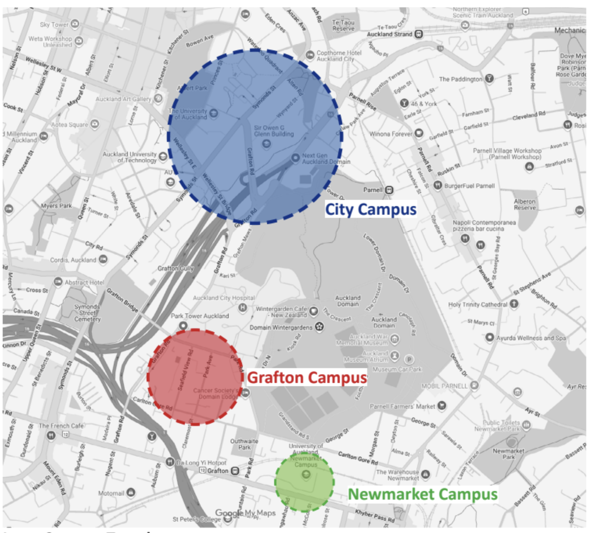
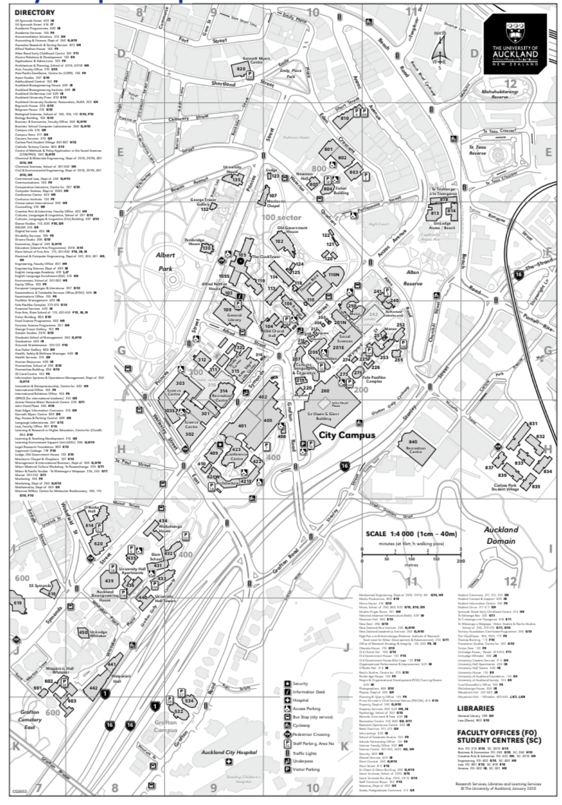
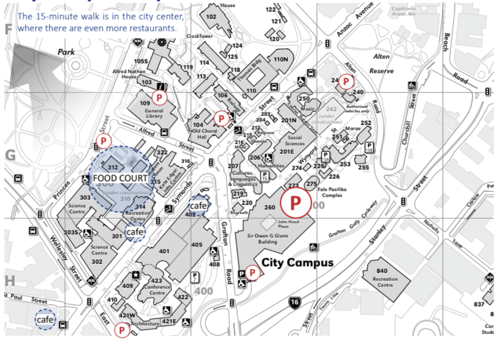
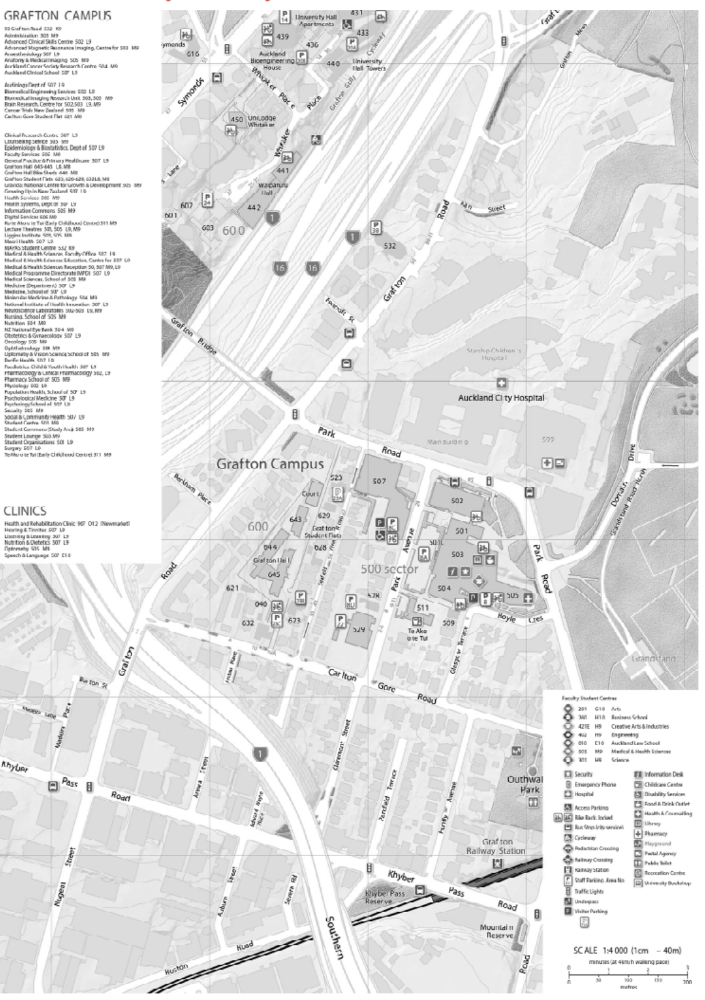
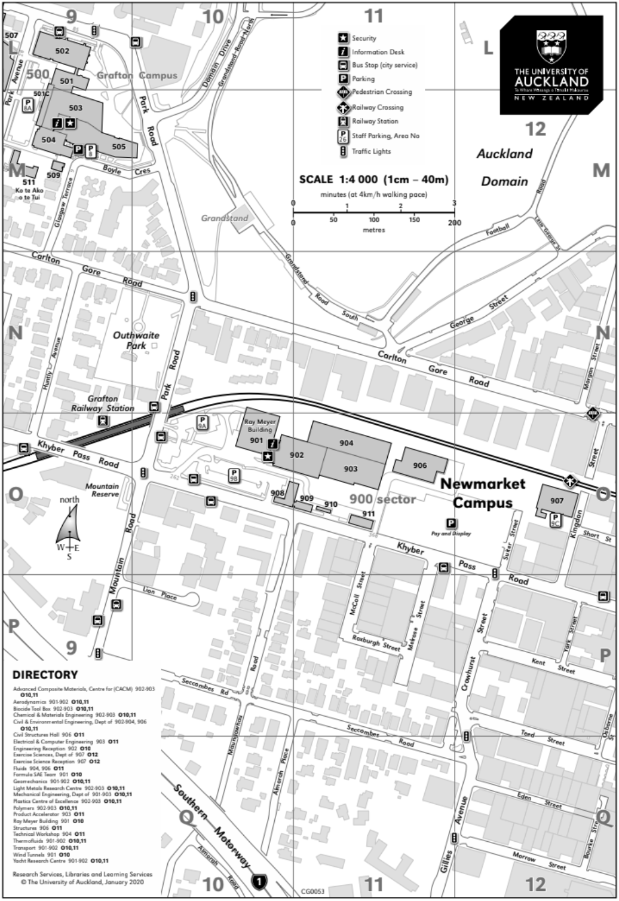
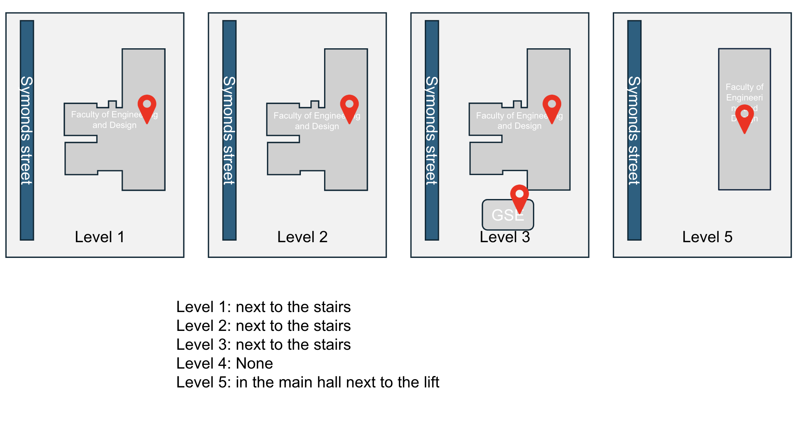

Table of Contents
| Content |
Pages |
| New Student Year-Round Checklist | 2-4 |
| New-Student Onboarding Checklist | 5-6 |
| Emergency Contacts & Support Services | 7-8 |
| Course Selection Guide | 9-10 |
| AT HOP Card & Tertiary Concession | 11-16 |
| Setting Up an IRD Number | 17-20 |
| Opening a Bank Account | 21-22 |
| Creating a RealMe Account | 23-24 |
| Campus Maps & Parking | 25-30 |
| Printer Locations & Printing Guide | 31-32 |
Accommodation Support
| Service |
Location |
Contact |
Notes |
| UoA Accommodation Support |
Accommodation Solutions, Office 219A, Level 2, Kate Edger Information Commons, Auckland 1010, New Zealand, 86 Symonds |
Email: accom@auckland.ac.nz |
Office Hours: Monday to Friday, 8.30am - 5.00pm |
| Carlaw Park Student Village |
| Email: dsymonds@auckland.ac.nz, Duty Phone: 027 565 0442, Email: cpsv@auckland.ac.nz, Duty Phone: 027 257 2443 |
|
| Grafton Hall |
|
Email: graftonhall@auckland.ac.nz, Duty Phone: 021 478 069 |
|
| Grafton Student Flats & Goldies Homestead |
|
Email: graftonstudentflats@auckland.ac.nz, Duty Phone: 021 478 069 |
|
| O'Rorke Hall |
|
Email: ororke@auckland.ac.nz, Duty Phone: 021 989 637 |
|
| Stuart McCutcheon House |
|
Email: smh@auckland.ac.nz, Duty Phone: 027 707 9813 |
|
| Te Tirohanga o te Tōangaroa |
|
Email: ttt@auckland.ac.nz, Duty Phone: 027 233 4612 |
|
| University Hall Towers & Waikohanga House |
|
Email: universityhall@auckland.ac.nz, Duty Phone: 027 544 2520 |
|
| Waipārūrū Hall |
|
Email: waiparuruhall@auckland.ac.nz, Duty Phone: 021 989 638 |
|
Course Selection Guide
Course selection is more than a checklist – it’s your first step into an exciting new chapter. Choose what inspires you, trust your instincts, and know that we’re here to support you every step of the way.
Step-by-step course-selection guide for Waipapa Taumata Rau | The University of Auckland
| Phase |
What to do |
Where / how |
Why it matters |
| 1 Get the big picture |
- Download the Degree Planner for your programme/major
- Skim faculty prospectus & any “Core Course” handbooks |
Faculty website → “Degree planners” section (The University of Auckland) |
Confirms all compulsory (core) courses and typical sequencing so you don’t overlook requirements. |
| 2 Check official regulations |
- Open the Programme Regulations page in the Calendar
- Note credit totals, stage (I/II/III/PG) rules, GPA thresholds, and any capstone/placement papers |
Calendar (via sso.auckland or SSO ‘Course advice and information’) (The University of Auckland) |
Regulations override everything else; knowing them avoids late-degree surprises. |
| 3 List your core courses first |
From steps 1-2, create a running list of every core paper (course code + points + pre-/co-reqs) |
Simple doc/sheet; you’ll drag these into each semester in Step 5. |
Keeps you focussed on “must-dos” before “nice-tos”. |
| 4 Audit prerequisites & sequencing |
For each core paper, open its Course Outline → note prerequisites, co-requisites, and recommended stages. |
SSO “Course outlines” search (The University of Auckland) |
Prevents enrolment blocks caused by missing prereqs. |
| 5 Build a multi-semester map |
- Log in to Timetable Planner inside SSO and create sample schedules for the coming year (or whole degree if you like).
- Drag core papers into recommended semesters; fill gaps with electives or GenEds. |
SSO → Timetable Planner (The University of Auckland) |
Visualises clashes & workload balance, showing whether everything will actually fit. |
| 6 Validate with an adviser |
- Email/visit a Student Hub or faculty course advice session; bring your map. |
AskAuckland → Course advice booking (The University of Auckland) |
Staff can spot hidden rules (e.g., cohort papers) and approve variations. |
| 7 Enrol early |
- Use Student Services Online → Enrolment to add courses + associated labs/tutorials. |
SSO → Enrol wizard (The University of Auckland) |
Popular classes fill quickly; core seats can run out. |
| 8 Confirm fees & point load |
- Check fee estimate and Enrolment Point Limit to ensure full-time status (usually ≥100 pts/year for undergrads). |
SSO finances tab + enrolment info page (The University of Auckland) |
Maintains visa/loan eligibility and graduation timeline. |
| 9 Review just before semester |
- Re-open Timetable Planner one week before classes for room/time changes.
- Drop/Swap during the Change of Enrolment window if needed. |
SSO → Timetable view |
Catches last-minute timetable shifts and lets you fix clashes penalty-free. |
Pro tips
- Bookmark core-course PDFs (e.g., Business School Core Handbook) for quick reference on policies and learning outcomes (The University of Auckland).
- Set calendar reminders for enrolment opening dates and last dates to add/drop without penalty.
- Keep a backup elective list—handy when a core paper is full or postponed.
With this workflow you’ll always load core subjects first, verify prerequisites early, and lock in a clash-free timetable well before lectures start. Happy studying!
Everything AT card (public transport)
What Is an AT HOP Card?
An AT HOP card is a reusable, prepaid smart card that allows you to pay for bus, train, and most ferry services in Auckland. It offers discounted fares compared to cash payments and provides convenience for frequent travelers.
How to Use Your AT HOP Card
1. Tag On When You Board
- Locate the Card Reader: As you enter the bus, train station, or ferry terminal, find the AT HOP card reader.
- Present Your Card: Hold your HOP card flat against the reader until you hear a beep and see a green light. This indicates a successful tag-on.
2. Tag Off When You Exit
- Find the Exit Reader: Before leaving the vehicle or station, locate the card reader.
- Present Your Card Again: Hold your card against the reader until you hear a beep and see a green light. This records your exit and ensures you’re charged the correct fare.
Important: Always tag on and off with the same card or device to avoid being charged a default fare.
How to Recharge (Top Up) Your AT HOP Card
Online Top-Up
- Register Your Card: Create a MyAT account and register your HOP card.
- Log In: Access your MyAT account.
- Select Top-Up: Choose the card you wish to top up and select 'Top up online'.
- Enter Amount and Payment Details: Specify the amount and provide your credit or debit card information.
- Confirm and Activate: After payment, tag on at any AT HOP reader within 60 days to activate the top-up. Note: Online top-ups may take up to 1 hour to become available.
In-Person Top-Up
- Retailers: Visit an AT HOP retailer.
- Ticket and Top-Up Machines: Use machines located at train stations and the Northern Busway.
- Customer Service Centers: Top up at these centers across Auckland. Tip: In-person top-ups are available immediately.
Auto Top-Up
- Set Up: In your MyAT account, choose 'Set up auto top-up'.
- Configure Settings: Select a minimum balance threshold and top-up amount.
- Payment Details: Provide your credit/debit card or bank account information.
- Activate: Tag on at an AT HOP reader within 60 days to activate the auto top-up.
- Benefit: Auto top-up ensures you never run out of balance.
Are You Eligible for Tertiary Concession?
Student Criteria:
- You must be a full-time student.
- Enrolled in and attending an NZQA-accredited and approved tertiary course.
- Studying at an AT-approved tertiary provider.
- Students eligible for fees-free education can also be eligible.
AT-Approved Tertiary Provider Criteria:
- Ministry of Education registered.
- NZQA registered (for PTEs and TITOs).
- Offers NZQA-approved and accredited tertiary courses.
- Located in the Auckland region.
- Signed a Tertiary Participation agreement with AT.
- "App-Approved Providers" are additionally authorised for AT Mobile app verification.
Defining “Full-Time Student” (EFTS-based) for Tertiary Concession:
AT uses the Tertiary Education Commission’s (TEC) Equivalent Full-Time Student (EFTS) value.
- Full-time/Full-year: Minimum 0.8 EFTS over at least 32 consecutive weeks in a full academic year.
- Full-time/Part-year (Semester): Minimum 0.4 EFTS over at least 16 consecutive weeks within the academic year.
- Limited Full-time: Meets StudyLink’s definition and has an approval letter from StudyLink.
Getting Your Tertiary Concession
To load a tertiary concession onto your AT HOP card, your eligibility must be confirmed first:
-
AT Tertiary ID Sticker
- Applied to your valid tertiary student ID card.
- Issued by your AT-approved tertiary provider.
- Pink sticker: First semester only.
- Green sticker: Second semester or full-year.
- Requires a fees receipt/certificate from your provider.
- Concession valid until your Student ID or sticker expires (whichever is first).
- Full-year sticker (expires March 31 next year) if enrolled for min. 32 consecutive weeks.
- Part-year sticker if conditions for one semester are met (e.g., 0.4 EFTS for 16 weeks).
- Show "Eligible" status in the app (only for "App-Approved Providers").
- Concession can be available for up to 3 years, subject to ongoing eligibility revalidation by your provider.
- If your enrollment changes (e.g., EFTS drops below 0.4 for a semester), your provider notifies AT, and your concession may expire after 2 weeks’ notice.
- AT Mobile App
Note: If you don’t attend an app-approved provider or lack a capable smartphone, you must use the AT Tertiary ID sticker method.
Tertiary Concession Coverage & Exclusions
What’s Included:
- Discount applies to travel using an AT HOP card loaded with a tertiary concession.
- Valid on trains and selected bus and ferry services.
- Fares are at least 20% less than the adult AT HOP single-trip fare.
- Available on services operated under contract between AT and public transport operators.
Who is NOT Eligible for Tertiary Concession:
- Part-time students.
- Students in Youth Guarantee, Foundation-Focused Training Opportunities, or similar government-funded courses.
- Those in correspondence study, distance learning, or receiving government funding for transport.
Service Exclusions for Tertiary Concession:
Some services are not covered. AT and operators can add/remove routes from the scheme without notice. If in doubt, check with the operator.
Important Conditions for Tertiary Concession
You will pay an adult fare if you:
- Do not have a tertiary concession loaded on your AT HOP card.
- Cannot confirm eligibility via the AT Mobile app (if applicable).
- Cannot present a valid Tertiary Student ID card with a valid AT Tertiary ID sticker.
- Auckland Transport may revise these terms and conditions at any time without notice. Changes take effect immediately once published on their website.
- AT regularly reviews its concessionary fare schemes, which may result in changes.
Further Information for Tertiary Concession
- For the application process, visit the “Tertiary student concession” page on the Auckland Transport website.
- Some operators like Fullers Ferries (www.fullers.co.nz) and SeaLink Ferries (www.sealink.co.nz) may offer their own tertiary discounts for services not contracted by AT.
- Check with your tertiary provider about campus shuttle bus services, which operate independently of this scheme.
This information is a summary. For complete and current details, please refer to the official Auckland Transport website.
Step By Step Guidance To Set Up IRD Number
To work part-time or access tax benefits in New Zealand as a student, you’ll need an IRD number (Inland Revenue Department number). This unique identifier is essential for tax purposes, ensuring you’re taxed correctly and can access entitlements. Here’s a comprehensive guide to help you set up your IRD number:
Step 1: Determine Your Application Category
- New Arrival to New Zealand: If you’ve recently arrived and are within the timeframe specified by your visa, apply as a ‘new arrival’.
- Living in New Zealand and Not a New Arrival: If you’ve been in New Zealand beyond your visa’s arrival date or are a New Zealand citizen/resident, use this category.
- Living Overseas: If you’re applying before arriving in New Zealand, this is your category.
Step 2: Gather Required Documents
Depending on your application category, you’ll need:
- Photo Identification: A valid passport or other approved ID.
- Proof of Address: Such as a utility bill or tenancy agreement.
- Visa Details: Your Immigration New Zealand application number.
- Tax Identification Number (TIN): From your home country, if available.
- New Zealand Bank Account: Evidence of a fully functional account or completed customer due diligence (IR997 form).
Ensure all documents are in English or accompanied by certified translations.
Step 3: Submit Your Application
-
Online Application: Apply through the Inland Revenue website corresponding to your category:
- New Arrival to New Zealand
- Living in New Zealand and Not a New Arrival
- Living Overseas
- In-Person Verification: If applying as ‘living in New Zealand and not a new arrival’, after online submission, visit an AA driver licensing agent within 60 days with your original documents for identity verification.
- Email Submission: If applying from overseas, complete the IR742 form and email it with scanned documents to [email protected]
Step 4: Receive Your IRD Number
After successful application and verification:
- Processing Time: Typically, within 2 working days if applying online; up to 10 working days by post.
- Delivery: You’ll receive your IRD number via email, text, or post, depending on your chosen method.
Detailed Instructions On How To Open A Bank Account
Opening a student bank account in New Zealand is a fundamental step in managing your finances during your studies. It enables you to handle tuition payments, receive funds from home, pay for daily expenses, and even earn income from part-time work. Moreover, having a local bank account helps you avoid international transaction fees and simplifies money transfers.
This guide provides detailed, step-by-step instructions to help you open a student bank account in New Zealand, ensuring a smooth and efficient process.
Popular Student Bank Accounts in New Zealand
Here are some banks that offer student-friendly accounts:
- ANZ Jumpstart Account
- Westpac International Student Account
- ASB Tertiary Account/ ASB International Student Account
- BNZ YouMoney Account
- Kiwibank FreeUp Account
What You’ll Need to Open a Student Bank Account
Most banks in New Zealand require the following documents:
- Valid Passport: Serves as your primary identification.
- Student Visa: A visa valid for at least six months is typically required.
- Proof of Enrolment: Such as your Offer of Place or Student ID card.
- Proof of New Zealand Address: This could be a tenancy agreement, utility bill, or a letter from your institution confirming your residence.
- Tax Identification Number: From your home country and/or your New Zealand IRD (Inland Revenue Department) number.
Steps to Open a Student Bank Account
-
Choose a Bank: Research banks that offer student accounts and compare their features.
-
Apply Online or In-Branch:
- Online: Some banks allow you to start the application process online, even before arriving in New Zealand.
- In-Branch: Visit a local branch with your documents. It’s advisable to make an appointment in advance.
- Complete the Application: Fill out the necessary forms and provide your documents.
- Activate Your Account: Once approved, you’ll receive your account details and debit card.
How to create a realme Account
Go to the link below:
RealMe - Login
Follow the steps below to create your RealMe profile:
- Select Create your RealMe login.
-
Set up your RealMe account by:
- providing your email address
- providing a username
- providing a password
- choosing 3 security questions and providing answers
- proving you’re a human – enter the characters you see in the picture.
- Accept the Terms of use and select Continue.
- Accept the account security disclaimer to create your Immigration Online profile.
- You will be redirected to the Immigration Online page. Enter a display name (this can be different to your RealMe username) and your email address.
- Choose Agree and continue.
-
You will receive 2 emails:
- an email from RealMe to say that your Registration is successful, and
- an email from Immigration Online to verify your account.
Check your spam mail if you have not received an email.
- Select Verification Link in the email from Immigration Online to activate your account. Then follow the links provided to verify your account.
- Select View my account and then Visitor Visa to complete the online application form.
- Once you are completed with the online account creating process you may receive an email mentioning you will have to visit the nearest AA center to get you photo taken within 15 days to match with your Realme profile. (Make sure to note the code in the email as you will need it at the AA center as a reference)
- Once the photo is processed, you will receive an email within 10 days that your Realme account is created.
Inter-Campus Travel

City ↔ Grafton:
Walking: Approximately 1.3 KM about 15 minutes.
Bus: InnerLink (INN) provides direct service between the campuses.
City ↔ Newmarket:
Walking: Approximately 2 KM, about 30 minutes.
Bus: Routes 70 and 75 offer direct connections.
Grafton ↔ Newmarket:
Walking: Approximately 1.1 KM, about 20 minutes.
Bus: Routes 70 and 75 provide service between these campuses.
For real-time schedules and route planning, consider using the Auckland Transport Journey Planner or the Google MAP App.
Key Bus Stops
City Campus (Main Campus)
-
University of Auckland (Stop ID: 1096):
- Location: 12 Grafton Road, adjacent to the City Campus.
- Bus Routes: 25B, 76, NX2, OUT, 101, 321, 27H, 27T, 27W, 70, 72X, 931, 933, 939.
-
Auckland Universities (Stop ID: 7147):
- Location: Symonds Street, directly adjacent to the City Campus.
- Bus Routes: 22N, 22R, 24B, 24R, 25L, 27H, 27T, 27W, 70, 82, NX2, 802, 923, 924.
-
Waterloo Quadrant (Stop ID: 7144):
- Location: Approximately a 5-minute walk from the City Campus.
- Bus Routes: 25B, 70, INN, OUT, 27H, 27T, 27W, 321, MEX, 72X, 931, 933, 939, 755.
Grafton Campus
-
Park Road / Auckland City Hospital:
- Location: Approximately a 3-minute walk from the Grafton Campus.
- Bus Routes: 30, 309, 321, 75, 866, INN (InnerLink), RBW (Western Rail Bus).
Newmarket Campus
-
Melrose Street:
- Location: Approximately a 2-minute walk from the Newmarket Campus.
- Bus Routes: INN (InnerLink), 30, 64, 70, 75.
-
Khyber Pass Road / Mountain Road:
- Location: Approximately a 4-minute walk from the Newmarket Campus.
- Bus Routes: N10.
LINKS:
1. ALL MAPS: https://www.auckland.ac.nz/en/on-campus/our-campuses/campus-maps.htm
2. PARKING INFORMATION: https://www.auckland.ac.nz/en/on-campus/our-campuses/parking-information.html
City Campus Map & Directory

Key Locations / Directory (City Campus)
(Note: This is a partial representation. Refer to original PDF for the full list.)
Student Parking at the University of Auckland – Quick Guide
City Campus (Owen G. Glenn Building - OGGB)
Location: Access via Grafton Road (opposite Stanley Street)
Availability: 5 parking levels, over 1,000 spaces
Hours:
- Weekdays: 6:30am–11:30pm
- Weekends: 7am–11:00pm
- Closed on public holidays
Casual Rates:
- $5/hour (up to 5 hours)
- $25 flat rate (5+ hours, Mon–Fri before 4:30pm)
- $6 flat rate (after 4:30pm weekdays / all-day weekends)
Payment: Pay at machines near the lifts. Use ticket to exit. EFTPOS accepted (credit card fee 1.9%). $25 lost ticket charge.

FOOD COURT. The 15-minute walk is in the city center, where there are even more restaurants.
Grafton Campus Map & Directory

Directory (Grafton Campus)
(Refer to original PDF for the full list.)
Newmarket Campus Map & Directory

Directory (Newmarket Campus)
(Refer to original PDF for the full list.)
Printer Locations

All-in-one devices capable of printing, photocopying, and scanning are available in study spaces, libraries, and student accommodations across campus.
Printing at the University of Auckland (For Students)
How to Print
- Log in: Use your Campus Card or student email and password.
- Funds: Ensure you have a positive balance in your University printing account.
- Locations: (As mentioned above).
Printing from Personal Devices
Web Print Service:
- Go to papercut.auckland.ac.nz and log in.
- Select 'Web Print' from the menu.
- Click 'Submit a Job'.
- Choose 'FollowMe-BW (virtual)' or 'FollowMe-Colour (virtual)' as your printer.
- Follow the prompts to upload your document and release the print job at any printer by logging in with your Campus Card or credentials.
Printing Costs
- Black and White: A4/A3: $0.10 per page. Double-sided: $0.20 per page.
- Colour: A4/A3: $0.20 per page. Double-sided: $0.40 per page.
Adding Funds to Your Printing Account
- ePOS Stations: Located on campus, including outside Case Room 3 on Level 0.
- Online Transfer: Transfer funds from your 'copy balance' to 'print balance' via your NetAccount.